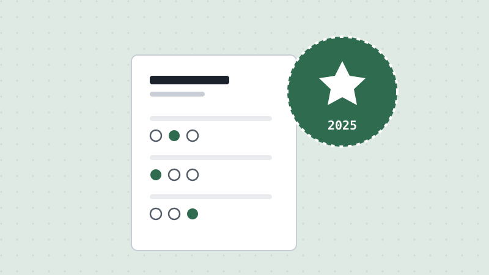

How the 2025 Civics Test Update Works
Updated July 2026 · 6 min read · Ciudadano Ready Team

If you've seen conflicting information about "100 questions" versus "128 questions," here's the short version: which test you take depends entirely on when you filed Form N-400, not on where you live or which office handles your case.
Two versions, split by filing date
If you filed your N-400 before October 20, 2025, you'll take the 2008 version of the civics test: the familiar 100-question bank. At your interview, the officer asks you up to 10 of those 100 questions, and you need to answer at least 6 correctly to pass.
If you filed on or after that date, you're on the 2025 version: a 128-question bank. The officer asks up to 20 questions from that set, and you need at least 12 correct.
Both versions test the same three broad categories: American Government, American History, and Integrated Civics, just with an expanded and updated question set in the 2025 version.
What actually changed
The 2025 update didn't just add questions; it refreshed some answers to reflect current facts. One example worth knowing: a Cabinet-related question that used to ask you to name a member of the President's Cabinet now lists the Secretary of War (Defense) among the acceptable answers, reflecting an official renaming of that position. If you studied years ago from an old printout, it's worth double-checking your materials are current rather than assuming nothing changed.
The 65/20 special consideration
If you're 65 or older and have held a Green Card for at least 20 years, you qualify for special consideration: you only need to study a designated 20-question subset marked with an asterisk in the official materials, and the officer only asks from that shorter list. That 20-question set is itself drawn from whichever full version applies to your filing date.
How to prepare either way
The good news is that preparation looks the same regardless of which version applies to you: you just need to know which set of questions to actually study. In your dashboard, our Flashcards let you pick the 100-question, 128-question, or 20-question set directly, and Mock Interview walks you through a simulated interview experience so the real day feels familiar.
This article is for general information only and is not legal advice. For guidance on your specific case, contact a licensed immigration attorney.